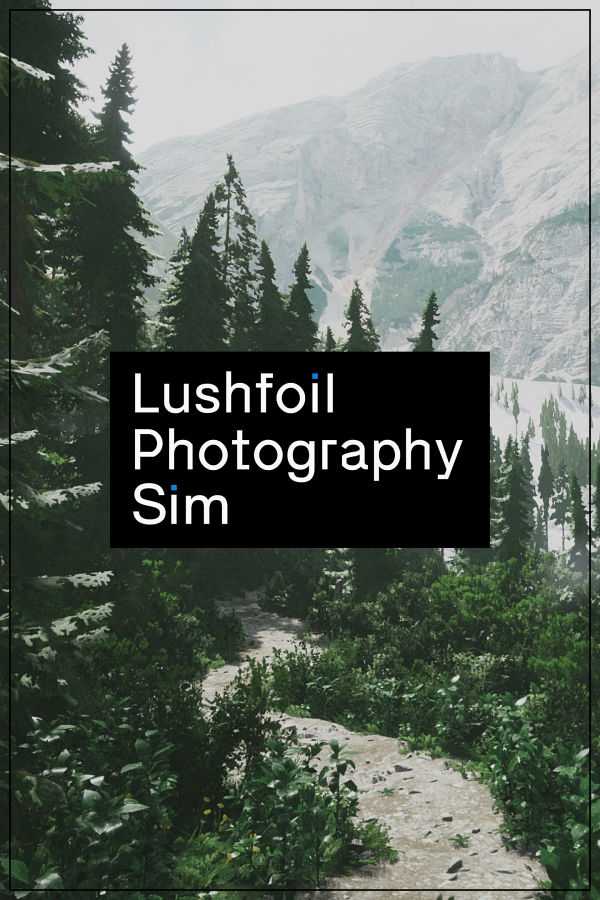

Game profile

Lushfoil Photography Sim
Every archived year-end list appearance, including placement and points earned.
About the Game
A tranquil exploration and photography experience set across a vast selection of faithfully detailed landscapes.
| Released | 2025-04-15 |
|---|---|
| Developer | Matt Newell |
| Publisher | Annapurna Interactive |
| Genres | Adventure, Simulation, Casual, Indie |
| Platforms | PC |
SingleplayerSteam AchievementsFull controller supportSteam CloudAtmosphericFirst-PersonExplorationSandboxController3DRealisticWalking Simulator
Where to Buy
Game information provided by RAWG.
1List appearances
1Years represented
Points by Year
12025 points
List History
| Year | Source | List | Placement | Points |
|---|---|---|---|---|
| 2025 | Eurogamer | The 50 best games of 2025, ranked | 33 | 1 |